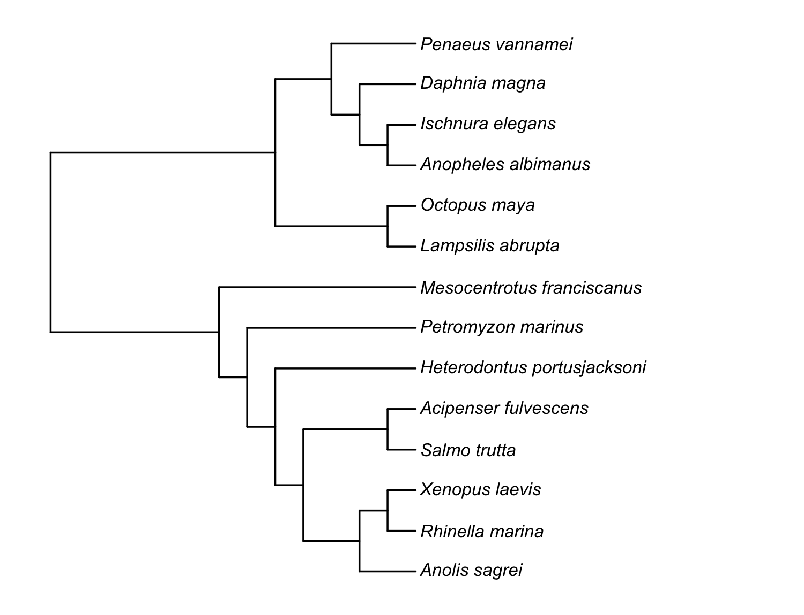
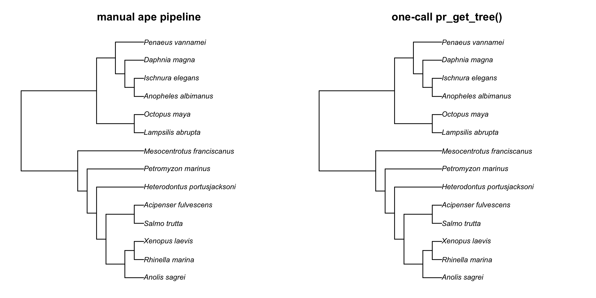
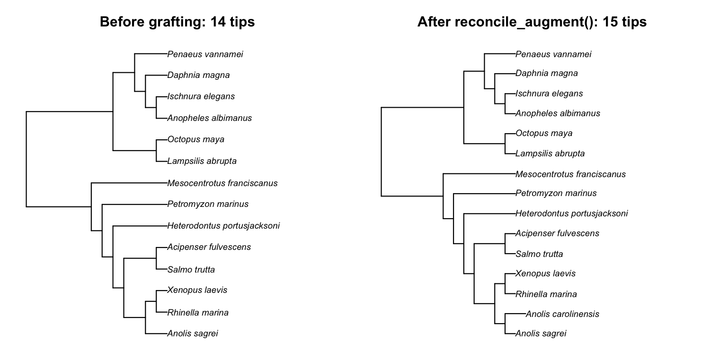

Phylogenetic meta-analysis with rotl + prepR4pcm
Source:vignettes/meta-analysis-with-rotl.Rmd
meta-analysis-with-rotl.RmdPhylogenetic meta-analysis is the dominant comparative workflow in ecology and evolutionary biology when the dataset spans many higher taxa: you compute an effect size per study, then fit a model that controls for shared evolutionary history.
The standard recipe (Cinar et al. 2022, Methods Ecol. Evol. 13:383) looks like:
-
Pull a topology from Open Tree of Life via
rotl. Open Tree of Life gives you tip labels and branching structure; the edge lengths it returns are unit-length placeholders — not biologically meaningful time/divergence values. -
Resolve polytomies at random via
ape::multi2di(random = TRUE). The phylogenetic correlation matrix you’ll feed into the meta-analysis model has to be full-rank, which means strictly bifurcating. -
Assign branch lengths via Grafen’s (1989) method:
ape::compute.brlen(tree, method = "Grafen"). Grafen’s method is the canonical choice for meta-analysis when no time-calibrated branches are available. -
Compute the phylogenetic correlation matrix:
ape::vcv(tree, corr = TRUE). -
Fit the meta-analysis with
metafor::rma.mv()(orMCMCglmm,brms,glmmTMB, etc.) using the correlation matrix as a random-effect structure.
prepR4pcm wraps steps 1-3 into a single
pr_get_tree() call, and step 4 into a single
pr_phylo_cor() call. This vignette walks through the whole
pipeline.
A worked example: thermal-tolerance plasticity across animal classes
We’ll mirror the phylogeny construction from Pottier et al. (2022) “Developmental plasticity in thermal tolerance” (Ecology Letters 25(10):2245-2268, DOI 10.1111/ele.14083). Their dataset spans 147 ectotherm species across 14 animal classes — fish, insects, reptiles, amphibians, crustaceans, bivalves, echinoderms, cephalopods, etc.
This is the cross-taxon case where rotl is the only
practical option for retrieval. The taxon-specific mega-tree
backends (the external tree-source packages that
pr_get_tree() draws on) each cover one clade only:
rtrees ships separate mega-trees for mammals, birds, fish,
amphibians, squamates and a handful of other taxa; fishtree
covers ray-finned fish only; clootl covers birds only. None
of those backends spans the 14-class breadth of an ectotherm
meta-analysis. The Open Tree of Life is a synthetic tree (i.e. a
composite made by merging other trees). Parameter
source = "rotl" from the prepR4pcm package function pr_get_tree()
returns a single tree spanning every class in the dataset, without
branch lengths.
Setup
We will use three packages: prepR4pcm (this package,
for the retrieve / clean / correlate pipeline), rotl
(the Open Tree of Life client that
pr_get_tree(source = "rotl") calls under the hood), and
metafor (the meta-analysis engine that consumes the
phylogenetic correlation matrix).
Step 1-3: topology -> bifurcating -> Grafen branches, in one call
For brevity we use 14 representative species — one or two from each major class in the Pottier dataset. Each class label below points at one or two species drawn from a different chunk of the ectotherm tree. We picked these classes because they are the ones contributing the most studies in Pottier et al. (2022); a real analysis would use all 147 species from the Pottier dataset.
species <- c(
# Actinopterygii (ray-finned fish)
"Salmo trutta", "Acipenser fulvescens",
# Reptilia
"Anolis sagrei",
# Amphibia
"Xenopus laevis", "Rhinella marina",
# Insecta
"Ischnura elegans", "Anopheles albimanus",
# Malacostraca (crustaceans)
"Litopenaeus vannamei",
# Branchiopoda
"Daphnia magna",
# Bivalvia (mussels)
"Lampsilis abrupta",
# Echinoidea (sea urchins)
"Mesocentrotus franciscanus",
# Cephalopoda
"Octopus maya",
# Chondrichthyes (sharks/rays)
"Heterodontus portusjacksoni",
# Hyperoartia (lampreys)
"Petromyzon marinus"
)
length(species) # 14The manual pipeline (without prepR4pcm)
Before introducing the wrapper, here is the manual
pipeline the Pottier et al. (2022) methods describe. It calls
rotl::tnrs_match_names() →
rotl::tol_induced_subtree() →
ape::multi2di(random = TRUE) →
ape::compute.brlen(method = "Grafen", power = 1). We use
the _manual suffix on every object so the wrapper version
below can sit next to it without overwriting anything:
# Step 1: get the rotl topology (no extras)
res_manual <- pr_get_tree(species, source = "rotl")
tree_manual <- res_manual$tree
# Step 2: resolve polytomies at random (bifurcating tree)
tree_manual <- ape::multi2di(tree_manual, random = TRUE)
# Step 3: Grafen branch lengths
tree_manual <- ape::compute.brlen(tree_manual, method = "Grafen")
res_manual$tree <- tree_manual
plot(tree_manual)The same in one call (with prepR4pcm)
pr_get_tree() with source = "rotl",
resolve_polytomies = TRUE, and
branch_lengths = "grafen" collapses the three steps above
into one call:
res <- pr_get_tree(
species,
source = "rotl",
resolve_polytomies = TRUE, # multi2di(random = TRUE)
branch_lengths = "grafen" # compute.brlen(method = "Grafen")
)
res$tree # ultrametric, bifurcating, Grafen branches
res$matched # species Open Tree of Life resolved
res$unmatched # species Open Tree of Life couldn't place
plot(res$tree) # visualise the topology
res$tree$tip.label # has _ott<digits> suffixes (see note below)
pr_get_tree(source = "rotl", resolve_polytomies = TRUE, branch_lengths = "grafen")):
ultrametric, fully bifurcating, with Grafen branch lengths. Tip labels
are shown cleaned of the OTT id suffixes.Confirm the two pipelines produce the same tree
# Same tip set?
setequal(res$tree$tip.label, res_manual$tree$tip.label) # TRUE
# Same branch-length range (modulo RNG order for the bifurcation)?
range(res$tree$edge.length)
range(res_manual$tree$edge.length)
# Side-by-side plot
op <- par(mfrow = c(1, 2))
plot(res_manual$tree, main = "manual ape pipeline")
plot(res$tree, main = "one-call pr_get_tree()")
par(op)
ape pipeline (left) and
the one-call pr_get_tree() (right) produce the same tree —
same topology, same Grafen branch lengths.About the _ott<digits> suffixes.
Open Tree of Life identifies every taxon by an OTT id
(e.g. Salmo_trutta_ott854188). rotl appends
that id to the tip label so a downstream tool can verify which OTT node
was placed. The suffix is informative for provenance but it makes the
tip labels disagree with the binomial names you almost certainly have in
your trait data frame ("Salmo trutta" vs
"Salmo_trutta_ott854188"). The meta-analysis step below
strips the suffix and converts underscores to spaces before computing
the correlation matrix.
Step 4: phylogenetic correlation matrix
The tree currently has _ott<digits> suffixes and
underscores in its tip labels. Strip those before computing the
correlation matrix so the row / column names match the binomials in your
trait data:
res$tree$tip.label <- gsub("_ott\\d+", "", res$tree$tip.label)
res$tree$tip.label <- gsub("_", " ", res$tree$tip.label)
res$tree$tip.label # now "Salmo trutta", etc.Now compute the phylogenetic correlation matrix:
phy_cor <- pr_phylo_cor(res)
dim(phy_cor) # 14 x 14 (one row/col per species)
isSymmetric(phy_cor) # TRUE
all(diag(phy_cor) == 1) # TRUE (correlation matrix; ultrametric tree)
rownames(phy_cor) # matches the binomials in `species`pr_phylo_cor() is a thin wrapper around
ape::vcv(tree, corr = TRUE). The function exists separately
so the meta-analysis pattern is self-documenting and so the matrix can
carry tree provenance.
Step 5: fit the meta-analysis with metafor
For the Pottier-style analysis, the effect size per study is the log response ratio (lnRR) of CTmax under contrasting developmental temperatures. Sampling variance comes with each effect via the group sample sizes / SDs. Suppose you’ve already extracted those per-study, per-species (this is the realistic shape of an ectotherm-thermal-tolerance dataset):
library(metafor)
# Toy effect-size data. Start by including every species at least
# once (otherwise random sampling can leave some species out and
# rma.mv complains about "levels in species without matching rows
# in R"). Then add 16 extra studies sampled with replacement to get
# a realistic multi-study-per-species shape.
set.seed(42)
toy_df <- data.frame(
species = c(species, # 14 guaranteed rows
sample(species, 16, replace = TRUE)), # 16 extra
study = sprintf("study_%02d", seq_len(30)),
yi = rnorm(30, mean = 0.20, sd = 0.15), # lnRR
vi = runif(30, min = 0.01, max = 0.08) # sampling variance
)
# Sanity-check: every species in the data is also a row in phy_cor.
stopifnot(all(toy_df$species %in% rownames(phy_cor)))
length(intersect(toy_df$species, rownames(phy_cor))) # 14
# Fit: random study effect (within-study) + random species effect
# (between-species, with phylogenetic correlation structure).
fit <- rma.mv(
yi ~ 1,
vi,
random = list(~1 | study, ~1 | species),
R = list(species = phy_cor),
data = toy_df,
method = "REML"
)
summary(fit)A more robust alternative to the Step 4 label
cleanup. The gsub() cleanup in Step 4 fixes label
formatting, but it cannot catch species that are in your trait
data yet absent from the tree (typos, synonyms, Open Tree of Life gaps).
For those, align tree and data with reconcile_tree() +
reconcile_apply() instead of the manual
gsub(): this drops unresolved species and returns a
data–tree pair guaranteed to match:
result <- reconcile_tree(
x = toy_df,
tree = res$tree, # already gsub-cleaned, see Step 4
x_species = "species",
authority = NULL # skip synonym lookup; tree labels already binomials
)
aligned <- reconcile_apply(
result,
data = toy_df,
tree = res$tree,
species_col = "species",
drop_unresolved = TRUE
)
phy_cor <- pr_phylo_cor(aligned$tree)
fit <- rma.mv(yi ~ 1, vi,
random = list(~1 | study, ~1 | species),
R = list(species = phy_cor),
data = aligned$data,
method = "REML")The R = list(species = phy_cor) argument is what tells
metafor that the species random effect has the correlation
structure given by your phylogeny. The ~1 | study
partitions within-study from between-species variance — standard for
meta-analysis of multi-study effect-size data.
Pottier et al. used a slightly more complex metafor
model including population, family, and shared-trial random effects (see
their Statistical_analyses.Rmd). The phylogenetic component
is the same R = list(species = phy_cor) either way.
Manual tree grafting when Open Tree of Life doesn’t have a species
A common situation: Open Tree of Life doesn’t have one of your
species. Pottier et al. ran into this with Potamilus alatus (a
freshwater mussel) — Open Tree of Life’s induced subtree errored on it,
so they pulled it out of the TNRS match, generated the tree without it,
then grafted it back manually with ape::bind.tip():
# Pottier et al.'s approach (paraphrased from their Rmd)
# Drop Potamilus alatus from the OTT id list: Open Tree of Life's
# induced-subtree service errors when this id is included.
taxa.tree <- filter(taxa, ott_id != "732215")
# Build the topology from the remaining OTT ids.
phylo_tree <- tol_induced_subtree(ott_ids = taxa.tree$ott_id)
# Resolve polytomies at random so the tree is strictly bifurcating
# (a full-rank phylogenetic correlation matrix needs this).
binary.tree <- multi2di(phylo_tree, random = TRUE)
# Graft Potamilus alatus back as a new tip at node 95 (inside
# Bivalvia). Attaching a tip *at* an existing node gives that node
# an extra child -- a polytomy -- which is why multi2di() ran first.
binary.tree <- bind.tip(binary.tree, tip.label = "Potamilus_alatus",
where = 95)In prepR4pcm, the equivalent of “graft a species back
in” is reconcile_augment(). Reconcile your trait data
against the retrieved tree first; any species the tree does not carry
lands in the reconciliation as unresolved.
reconcile_augment() then grafts each unresolved species
that has a congener already in the tree, and records the placement in
$augmented for the methods section.
The worked example below adds Anolis carolinensis — a congener of Anolis sagrei, already in the 14-species tree from Steps 1-3 — and shows the species counts before and after grafting:
# Trait data carrying one species the retrieved tree lacks: Anolis
# carolinensis, a congener of Anolis sagrei (which is in the tree).
graft_df <- data.frame(
species = c(res$tree$tip.label, "Anolis carolinensis")
)
nrow(graft_df) # 15 species in the trait data
# Reconcile data names against the tree: 14 match, 1 is unresolved.
rec <- reconcile_tree(graft_df, res$tree,
x_species = "species", authority = NULL)
# Graft each unresolved species next to a congener already in the tree.
aug <- reconcile_augment(rec, res$tree)
aug$meta$original_n_tips # 14 (tree tips before grafting)
aug$meta$augmented_n_tips # 15 (tree tips after grafting)
aug$augmented[, c("species", "placed_near", "n_congeners")]
#> species placed_near n_congeners
#> 1 Anolis carolinensis Anolis sagrei 1
# The augmented tree is ready for a comparative model: still fully
# resolved, and still ultrametric.
ape::is.binary(aug$tree) # TRUE
ape::is.ultrametric(aug$tree) # TRUEThe trait data has 15 species; the retrieved tree had only 14 tips;
after reconcile_augment() the tree carries all 15. Plotting
the tree before and after makes the single added tip visible:
# reconcile_augment() writes the grafted tip label with an
# underscore; convert to a space for a consistent set of binomials.
aug$tree$tip.label <- gsub("_", " ", aug$tree$tip.label)
op <- par(mfrow = c(1, 2))
plot(aug$original, main = "Before grafting: 14 tips")
plot(aug$tree, main = "After reconcile_augment(): 15 tips")
par(op)
reconcile_augment() grafts Anolis carolinensis (15
tips). The new species joins as a bifurcating sister to its congener
Anolis sagrei, and its terminal branch is adjusted so every tip
stays aligned at the present: the augmented tree is bifurcating and
ultrametric, ready for pr_phylo_cor().Why the augmented tree has no polytomy. Manual
bind.tip(where = 95) attaches the new tip at node
95, so that node gains a third child — a polytomy — which is why the
Pottier pipeline runs multi2di() afterwards.
reconcile_augment(), with its default
where = "genus", instead inserts the new species part-way
along the terminal branch of a congener: it splits that branch
into a new two-way node, with the new species as one of the two
children. The result is strictly bifurcating
(ape::is.binary(aug$tree) returns TRUE), so no
follow-up multi2di() is needed. Passing
branch_length = "zero" or where = "near"
attaches the tip at an existing node instead, and so produces a polytomy
by design; see ?reconcile_augment.
The augmented tree also stays ultrametric.
Phylogenetic comparative methods — pr_phylo_cor(), PGLS,
phylogenetic meta-analysis — need an ultrametric tree: every species
sits the same distance from the root, because all are extant and have
had the same time to evolve. A grafted tip would not land exactly at the
present on its own, so reconcile_augment() adjusts each
grafted tip’s terminal branch afterwards to restore ultrametricity
(ape::is.ultrametric(aug$tree) returns TRUE).
The augmented tree therefore feeds straight into
pr_phylo_cor() and a phylogenetic meta-analysis, exactly as
in Steps 4-5.
The same one-species-manually-added pattern shows up in Cinar et al. (2022, Methods Ecol. Evol. 13:383), where Villosa delumbis was added based on ITIS — they describe it as “Polytomies were resolved at random, and one species, Villosa delumbis, was manually added to the tree based on information from the Integrated Taxonomic Information System.”
Why Grafen (and not DateLife / a time-calibrated tree)?
In principle you could replace Grafen branches with biologically real ones from DateLife:
# Alternative: get rotl topology, then date it with DateLife
res <- pr_get_tree(species, source = "rotl",
resolve_polytomies = TRUE) # NO branch_lengths
dated <- pr_date_tree(res$tree) # DateLife dates it
phy_cor <- pr_phylo_cor(dated)For most phylogenetic meta-analyses, we recommend Grafen, not DateLife, for three reasons:
- Coverage. DateLife synthesises from per-clade published chronograms. For a cross-taxon dataset like Pottier’s (lampreys, bivalves, insects, fish, mammals etc., spanning 14 animal classes), DateLife usually can’t return a chronogram covering all of them — its database is sparse outside well-studied single-clade groups (mammals, birds, fish).
-
Question alignment. Phylogenetic meta-analysis
models a species random effect with a phylogenetic correlation
structure. The model asks “do related species have correlated effect
sizes?”, not “how fast does the trait evolve per unit time?”. Pagel’s λ
on the species random effect (which
metaforestimates implicitly when you supply the correlation matrix) absorbs branch-length scale, so the choice between Grafen-units and time-units matters less than it would for, say, a Brownian-motion rate estimate. - Reproducibility. Grafen’s method is deterministic given the topology; DateLife results depend on which chronograms are in their database the day you run it.
Use DateLife instead when:
- Your taxa fall within a single, well-studied clade (mammals, birds,
insects-Lepidoptera, fish — see
?pr_date_tree). - The science question requires real divergence times (trait- evolution rate, Brownian-motion variance per million years, divergence-time questions).
- You’re fitting a Brownian-motion-on-tree model directly (e.g. in
caper::pglsorphylolm::phylolm) where branch-length scale enters the variance directly.
For the realistic cross-taxon meta-analysis case (the one Pottier et
al. 2022 and many others run), Grafen via
pr_get_tree(..., branch_lengths = "grafen") is the
practical default.
What this vignette deliberately doesn’t cover
-
Mixed-effect specification.
metafor::rma.mv()takes many more random/fixed structures than~ 1 | species. See Viechtbauer- Journal of Statistical Software 36:1.
-
Branch-length sensitivity. The Cinar et
al. simulation shows Grafen-vs-time-calibrated lengths matter. If your
topology is time-calibrated
(e.g.
source = "fishtree"orsource = "datelife"), don’t apply Grafen on top — passbranch_lengths = NULL(the default) and use the chronogram directly. -
Multi-tree posterior. If your backend returns a
multiPhylo,pr_phylo_cor()returns a list of correlation matrices. Feed each tometaforseparately and pool with Rubin’s rules — see the posterior-tree pipeline vignette.
See also
-
?pr_get_tree— the main function for fetching a tree. -
?pr_phylo_cor— the correlation-matrix wrapper. -
?reconcile_augment— for grafting species Open Tree of Life didn’t place. - Pottier, Burke, Drobniak, Lagisz, Nakagawa (2022). Developmental plasticity in thermal tolerance: ontogenetic variation, persistence, and future directions. Ecology Letters 25(10): 2245–2268. DOI 10.1111/ele.14083. Source code: github.com/p-pottier/Dev_plasticity_thermal_tolerance.
- Cinar, Nakagawa, & Viechtbauer (2022). Phylogenetic multilevel meta-analysis: a simulation study on the importance of modelling the phylogeny. Methods Ecol. Evol. 13(2): 383–395. DOI 10.1111/2041-210X.13760.
- Michonneau, Brown, & Winter (2016). rotl: an R package to interact with the Open Tree of Life data. Methods Ecol. Evol. 7(12): 1476–1481. DOI 10.1111/2041-210X.12593.
- Paradis & Schliep (2019). ape 5.0: an environment for modern phylogenetics and evolutionary analyses in R. Bioinformatics 35(3): 526–528. DOI 10.1093/bioinformatics/bty633.
- Grafen (1989). The phylogenetic regression. Phil. Trans. R. Soc. B 326: 119–157. DOI 10.1098/rstb.1989.0106.